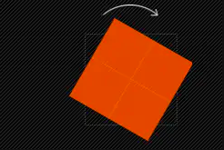
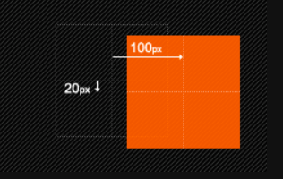
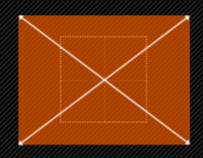
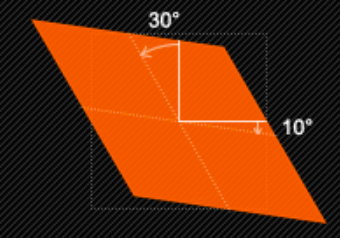
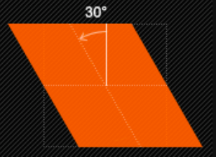
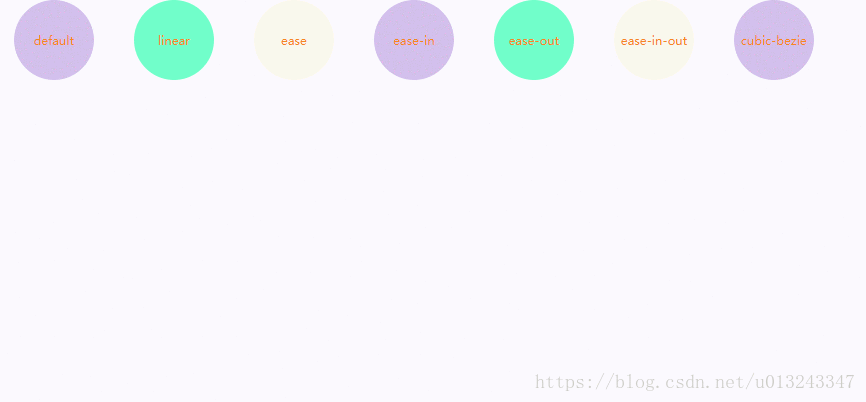
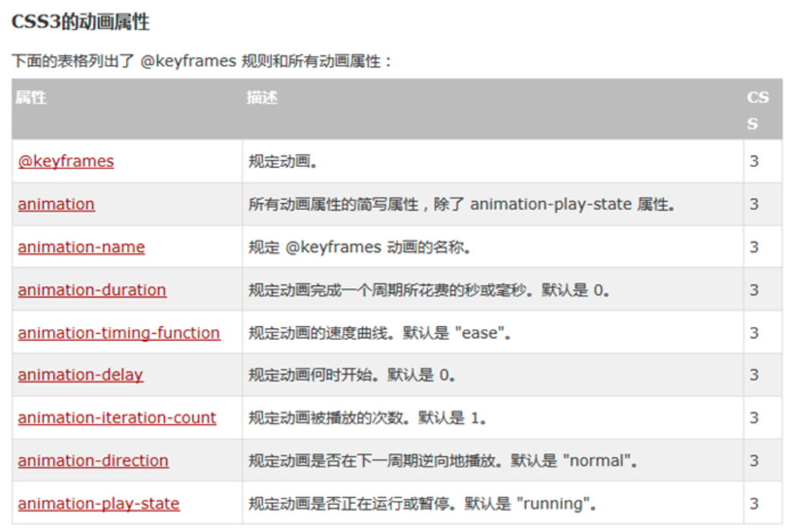

前言
下面汇总并总结了有关与CSS动画的知识点，再次熟悉一遍！
CSS Transform/CSS Transition/CSS Animation/CSS Gradient
一、CSS Transform
Transform字面上就是变形，改变的意思。在CSS3中transform主要包括以下几种：旋转rotate、扭曲skew、缩放scale和移动translate以及矩阵变形matrix。
语法：
transform ： none | [ rotate | scale | skew | translate |matrix]
none:表示不进么变换；后者表示一个或多个变换函数，**以空格分开**
1、 旋转rotate
rotate() ：通过指定的角度参数对原元素指定一个2D 旋转，需先有transform-origin属性的定义。transform-origin定义的是旋转的基点，其中angle是指旋转角度，如果设置的值为正数表示顺时针旋转，如果设置的值为负数，则表示逆时针旋转。
如：transform:rotate(30deg)

2、移动translate
移动translate我们分为三种情况：
translate(x,y)水平方向和垂直方向同时移动（也就是X轴和Y轴同时移动）translateX(x)仅水平方向移动（X轴移动）translateY(Y)仅垂直方向移动（Y轴移动）
也可以根据
transform-origin改变基点位置

3、缩放scale
缩放scale具有三种情况：
scale(x,y)使元素水平方向和垂直方向同时缩放（也就是X轴和Y轴同时缩放）scaleX(x)元素仅水平方向缩放（X轴缩放）scaleY(y)元素仅垂直方向缩放（Y轴缩放）
但它们具有相同的缩放中心点和基数，其中心点就是元素的中心位置，
缩放基数为1，如果其值大于1元素就放大，反之其值小于1，元素缩小。
scale([, ])：提供执行[sx,sy]缩放矢量的两个参数指定一个2D缩放。如果第二个参数未提供，则取与第一个参数一样的值。scale(X,Y)是用于对元素进行缩放，可以通过transform-origin对元素的基点进行设置，同样基点在元素中心位置；基中X表示水平方向缩放的倍数，Y表示垂直方向的缩放倍数，而Y是一个可选参数，如果没有设置Y值，则表示X，Y两个方向的缩放倍数是一样的。并以X为准。如：
1 | transform:scale(2,1.5) |

4、扭曲skew
扭曲skew具有三种情况：
skew(x,y)使元素在水平和垂直方向同时扭曲（X轴和Y轴同时按一定的角度值进行扭曲变形）skewX(x)仅使元素在水平方向扭曲变形（X轴扭曲变形）skewY(y)仅使元素在垂直方向扭曲变形（Y轴扭曲变形）
skew( [, ]) ：X轴Y轴上的斜切变换。第一个参数对应X轴，第二个参数对应Y轴。如果第二个参数未提供，则值为0，也就是Y轴方向上无斜切。
skew是用来对元素进行扭曲变行，第一个参数是水平方向扭曲角度，第二个参数是垂直方向扭曲角度。其中第二个参数是可选参数，如果没有设置第二个参数，那么Y轴为0deg。同样是以元素中心为基点，我们也可以通过transform-origin来改变元素的基点位置。如：
1 | transform:skew(30deg,10deg): |

skewX() ： 按给定的角度沿X轴指定一个斜切变换。如：
1 | transform:skewX(30deg) |

5、矩阵matrix
matrix(, , , , , )
以一个含六值的(a,b,c,d,e,f)变换矩阵的形式指定一个2D变换，相当于直接应用一个[a b c d e f]变换矩阵。就是基于水平方向（X轴）和垂直方向（Y轴）重新定位元素,此属性值使用涉及到数学中的矩阵。
6、改变元素基点transform-origin
其主要作用就是让我们在进行transform动作之前可以改变元素的基点位置。
因为我们元素默认基点就是其中心位置，换句话说我们没有使用transform-origin改变元素基点位置的情况下，transform进行的rotate,translate,scale,skew,matrix等操作都是以元素自己中心位置进行变化的。但有时候我们需要在不同的位置对元素进行这些操作，那么我们就可以使用transform-origin来对元素进行基点位置改变，使元素基点不在是中心位置，以达到你需要的基点位置。下面我们主要来看看其使用规则：
transform-origin(X,Y): 用来设置元素的运动的基点（参照点）。默认点是元素的中心点。其中X和Y的值可以是百分值,em,px，其中X也可以是字符参数值left,center,right；Y和X一样除了百分值外还可以设置字符值top,center,bottom
top left | left top等价于0 0 | 0% 0%top | top center | center top等价于50% 0right top | top right等价于100% 0left | left center | center left等价于0 50% | 0% 50%center | center center等价于50% 50%（默认值）right | right center | center right等价于100% 50%bottom left | left bottom等价于0 100% | 0% 100%bottom | bottom center | center bottom等价于50% 100%bottom right | right bottom等价于100% 100%
其中 left,center right是水平方向取值，对应的百分值为left=0%;center=50%;right=100%，而top center bottom是垂直方向的取值，其中top=0%;center=50%;bottom=100%;如果只取一个值，表示垂直方向值不变
这里还要提醒大家一点的是，transform-origin并不是transform中的属性值，他具有自己的语法，跟其他的css3属性一样，我们需要在不同的浏览内核中加上相应的前缀，下面列出各种浏览器内核下的语法规则：
1 | //Mozilla内核浏览器： |
二、CSS Transition
参考自深入理解CSS过渡transition（博主写的太赞了！）
可参考MDN文档
1、定义
过渡transition是一个复合属性，包括transition-property、transition-duration、transition-timing-function、transition-delay这四个子属性。通过这四个子属性的配合来完成一个完整的过渡效果
1 | transition-property: 过渡属性(默认值为all) |
**[注意]**IE9-不支持该属性，
safari3.1-6、IOS3.2-6.1、android2.1-4.3需要添加-webkit-前缀；而其余高版本浏览器支持标准写法
2、复合属性
过渡transition的这四个子属性只有<transition-duration>是必需值且不能为0。其中，<transition-duration>和<transition-delay>都是时间。当两个时间同时出现时，第一个是<transition-duration>，第二个是<transition-delay>；当只有一个时间时，它是<transition-duration>，而<transition-delay>为默认值0
[注意]
transition的这四个子属性之间不能用逗号隔开，只能用空格隔开。因为逗号隔开的代表不同的属性(transition属性支持多值，多值部分(稍后介绍)；而空格隔开的代表不同属性的四个关于过渡的子属性
3、过渡属性 transition-property
值:
none|all|<transition-property>[,<transition-property>]*初始值:
all应用于: 所有元素
继承性: 无
1 | none: 没有指定任何样式 |
可过渡的样式
不是所有的CSS样式值都可以过渡，只有具有中间值的属性才具备过渡效果
1 | Vstart = 开始值; Vend = 结束值; Vres = 中间值; p = 过渡函数的输出值 |
颜色:
colorbackground-colorborder-coloroutline-color位置:
backround-positionleftrighttopbottom长度:
[1]max-heightmin-heightmax-widthmin-widthheightwidth
[2]border-widthmarginpaddingoutline-widthoutline-offset
[3]font-sizeline-heighttext-indentvertical-align
[4]border-spacingletter-spacingword-spacing数字:
opacityvisibilityz-indexfont-weightzoom组合:
text-shadowtransformbox-shadowclip其他:
gradient
4、过渡持续时间 transition-duration
值:
<time>[,<time>]*初始值: 0s
应用于: 所有元素
继承性: 无
**[注意]**该属性不能为负值,单位是秒s或毫秒ms
**[注意]**若该属性为0s则为默认值，若为0则为无效值。所以必须带单位
**[注意]**该值为单值时，即所有过渡属性都对应同样时间；该值为多值时，过渡属性按照顺序对应持续时间
5、过渡延迟时间 transition-delay
该属性定义元素属性延迟多少时间后开始过渡效果，该属性的单位是秒s或毫秒ms
值:
<time>[,<time>]*初始值: 0s
应用于: 所有元素
继承性: 无
**[注意]**该属性若为负值，无延迟效果，但过渡元素的起始值将从0变成设定值(设定值=延迟时间+持续时间)。若该设定值小于等于0，则无过渡效果；若该设定值大于0，则过渡元素从该设定值开始完成剩余的过渡效果
**[注意]**若该属性为0s则为默认值，若为0则为无效值。所以必须带单位
**[注意]**该值为单值时，即所有过渡属性都对应同样时间；该值为多值时，过渡属性按照顺序对应持续时间
6、过渡时间函数 transition-timing-function
过渡时间函数用于定义元素过渡属性随时间变化的过渡速度变化效果
值:
<timing-function>[,<timing-function>]*初始值: ease
应用于: 所有元素
继承性: 无
取值
过渡时间函数共三种取值:分别是关键字、steps函数和bezier函数
①steps函数
steps步进函数将过渡时间划分成大小相等的时间时隔来运行
steps步进函数为
1 | steps(<integer>[,start | end]?) |
②贝塞尔曲线
贝塞尔曲线通过p0-p3四个控制点来控制，其中p0表示(0,0)，p3表示(1,1)。而<transition-timing-function>就是通过确定p1(x1,y1)和p2(x2,y2)的值来确定的。可以使用工具网站来定制。
③关键字
关键字其实是bezier函数或steps函数的特殊值
1 | ease: 开始和结束慢，中间快。相当于cubic-bezier(0.25,0.1,0.25,1) |

7、触发方式
一般地，过渡transition的触发有三种方式，分别是伪类触发、媒体查询触发和javascript触发。其中常用伪类触发包括:hover、:focus、:active等
@media触发 符合媒体查询条件时触发
1 | /* 把浏览器的宽度拖动到小于1000px时触发 */ |
点击事件 用户点击元素时触发
1 | test.onclick = function(){ |
8、 *API
关于过渡transition的事件只有一个，是
transitionend事件，它发生在过渡事件完成后[注意]safari3.1-6、ISO3.2-6.1、android2.1-4.3需要使用
webkitTransitionEnd事件
9、 transition的使用注意
参考自 阮一峰网络日志
（1）目前，各大浏览器（包括IE 10）都已经支持无前缀的transition，所以transition已经可以很安全地不加浏览器前缀。
（2）不是所有的CSS属性都支持transition，完整的列表查看这里，以及具体的效果。
（3）transition需要明确知道，开始状态和结束状态的具体数值，才能计算出中间状态。比如，height从0px变化到100px，transition可以算出中间状态。但是，transition没法算出0px到auto的中间状态，也就是说，如果开始或结束的设置是height: auto，那么就不会产生动画效果。类似的情况还有，display: none到block，background: url(foo.jpg)到url(bar.jpg)等等。
10、 transition的局限
transition的优点在于简单易用，但是它有几个很大的局限。
（1）transition需要事件触发，所以没法在网页加载时自动发生。
（2）transition是一次性的，不能重复发生，除非一再触发。
（3）transition只能定义开始状态和结束状态，不能定义中间状态，也就是说只有两个状态。
（4）一条transition规则，只能定义一个属性的变化，不能涉及多个属性。
CSS Animation就是为了解决这些问题而提出的。
三、CSS Animation
SVG动画实践
CSS3动效网站:
一个很全的CSS3的动效库，可以尝试看看源码进行学习。
CreateJS 里面的特效做得也很不错，有很多酷炫的样例。
国外css3网页 布局很优雅的网站
USAToday 也是一个很酷炫的国外网站
peekabeat 很清爽的界面
dances 貌似是交响乐的网站主页（打不开）
reative 很有时代感的网站(第一感觉有点突兀吓人)
animation 在线animation编辑器
动画可以通过设置多个节点来精确控制一个或一组动画，常用来实现复杂的动画效果。
创建动画序列，需要使用animation属性或其子属性，该属性允许配置动画时间、时长以及其他动画细节，但该属性不能配置动画的实际表现，动画的实际表现是由 @keyframes规则实现，具体情况参见使用keyframes定义动画序列小节部分。
实例
animation：动画名称动画时间运动曲线何时开始播放次数是否反方向;
1、Animation 属性
注意：由于animate为复合属性，简写时极易导致不对应而产生无效属性值的问题
也有可能因为没有将元素设置为 block 或者 inline-block 而导致
简写属性形式:
animation:
[
animation-name] // 动画的名称[
animation-duration] // 持续时间[
animation-timing-function] // 关于时间的函数(properties/t)[
animation-delay] // 延迟时间[
animation-iteration-count] // 播放次数[
animation-direction] // 播放顺序[
animation-fill-mode] // 播放前或停止后设置相应样式[
animation-play-state]; // 控制动画运行或暂停
1. 时间函数（animation-timing-function）
animation-timing-function属性定义了动画的播放速度曲线。
可选配置参数为:ease (默认值)、ease-in、ease-out、ease-in-out、linear、cubic-bezier(number, number, number, number)

2. 动画延迟（animation-delay）
animation-delay属性定义动画是从何时开始播放，即动画应用在元素上的到动画开始的这段时间的长度。
默认值0s，表示动画在该元素上后立即开始执行。
该值以秒(s)或者毫秒(ms)为单位。
3. 动画迭代次数（animation-iteration-count）
animation-iteration-count该属性就是定义我们的动画播放的次数。次数可以是1次或者无限循环（默认值为1）
single-animation-iteration-count = infinite | number
4. 动画方向（animation-direction）
animation-direction属性表示CSS动画是否反向播放。
可选配置参数为:
single-animation-direction = normal | reverse | alternate | alternate-reverse
- animation-direction: normal 正序播放
- animation-direction: reverse 倒序播放
- animation-direction: alternate 交替播放
- animation-direction: alternate-reverse 反向交替播放
- animation-direction: normal, reverse
- animation-direction: alternate, reverse, normal
5.动画填充模式（animation-fill-mode）
animation-fill-mode是指给定动画播放前后应用元素的样式。
single-animation-fill-mode = none **| **forwards **| **backwards **| **both
- animation-fill-mode: none 动画执行前后不改变任何样式
- animation-fill-mode: forwards 保持目标动画最后一帧的样式
- animation-fill-mode: backwards 保持目标动画第一帧的样式
- animation-fill-mode: both 动画将会执行 forwards 和 backwards 执行的动作。
6.动画播放状态（animation-play-state）
animation-play-state: 定义动画是否运行或者暂停。可以查询它来确定动画是否运行。默认值为running
有时，动画播放过程中，会突然停止。这时，默认行为是跳回到动画的开始状态。
如果鼠标移走，色块立刻回到动画开始状态。如果想让动画保持突然终止时的状态，就要使用animation-play-state属性。
single-animation-timing-function = running | paused
- running 动画正常播放
- paused 动画暂停播放

浏览器前缀
目前，IE 10和Firefox（>= 16）支持没有前缀的animation，而chrome不支持，所以必须使用webkit前缀。
也就是说，实际运用中，代码必须写成下面的样子。
1 | div:hover { |
2、keyframes的写法
keyframes关键字用来定义动画的各个状态，它的写法相当自由。
0%可以用from代表，100%可以用to代表。
1 | @keyframes rainbow { |
如果省略某个状态，浏览器会自动推算中间状态，所以下面都是合法的写法。
1 | @keyframes rainbow { |
甚至，可以把多个状态写在一行。
1 | @keyframes pound { |
另外一点需要注意的是，浏览器从一个状态向另一个状态过渡，是平滑过渡。steps函数可以实现分步过渡。
1 | div:hover { |
附一个MDN的例子：赛隆人之眼(赛隆人是一个虚构的生化人种族,出自科幻电视系列剧星际大争霸系列**)**
然后引出 渐变色 的概念，MDN 使用CSS渐变 的传送门
四、CSS 渐变
CSS 渐变<image> 类型的一种特殊类型 <gradient>表示，由两种或多种颜色之间的渐进过渡组成。您可以选择三种类型的渐变：线性 (由 linear-gradient 函数创建)，径向(由 radial-gradient() 函数创建) 和圆锥 (由 conic-gradient 函数创建)。您还可以使用 repeating-linear-gradient 和 repeating-radial-gradient 函数创建重复渐变。
渐变可以在任何使用 <image> 的地方使用，例如在背景中。 由于渐变是动态生成的，因此它们可以消除对传统用于实现类似效果的栅格图像文件的需求。 此外，由于渐变是由浏览器生成的，因此在放大时它们看起来比栅格图像更好，并且可以动态调整大小。
1、使用线性渐变
线性渐变创建了一条沿直线前进的颜色带。
基础线性渐变
要创建最基本的渐变类型，您只需指定两种颜色即可。 这些被称为色标。 至少指定两个色标，也可以指定任意数量。
1 | .simple-linear { |
改变渐变方向
默认情况下，线性渐变的方向是从上到下， 你可以指定一个值来改变渐变的方向。
1 | .horizontal-gradient { |
对角线渐变
你甚至可以设置渐变方向为从一个对角到另一个对角。
1 | .diagonal-gradient { |
设置渐变角度
如果你想要更精确地控制渐变的方向，你可以给渐变设置一个具体的角度。
1 | .angled-gradient { |
2、声明颜色和创建效果
所有的CSS渐变类型都是一个位置依赖的颜色范围。CSS渐变产生的颜色可以随位置不断变化，从而产生平滑的颜色过渡。也可以创建纯色带和两种颜色之间的硬过渡。以下内容适用于所有渐变函数：
使用多种颜色
无需局限于使用两种颜色，你想使用多少种颜色都可以！ 默认情况下，所设置颜色会均匀分布在渐变路径中。
1 | .auto-spaced-linear-gradient { |
颜色终止位置
你不需要让你设置的颜色在默认位置终止。 你可以通过给每个颜色设置0，1%或者2%或者其他的绝对数值来调整它们的位置。如果你将位置设置为百分数， 0% 表示起始点, 而100%表示终点，但是如果需要的话你也可以设置这个范围之外的其他值来达到你想要的效果。如果有些位置你没有明确设置，那么它将会被自动计算，第一种颜色会在0%处停止，而最后一种颜色是100%，至于其他颜色则是在它邻近的两种颜色的中间停止。
1 | .multicolor-linear { |
创建实线
要在两种颜色之间创建一条硬线，即创建一个条纹而不是逐渐过渡，可以将相邻的颜色停止设置为相同的位置。在此示例中，两种颜色在50%标记处共享一个颜色停止点，即渐变的一半：
1 | .striped { |
渐变提示
默认情况下，渐变会平滑地从一种颜色过渡到另一种颜色。你可以通过设置一个值来将渐变的中心点移动到指定位置。 在如下示例中, 我们将渐变的中心点由50%设为10%。
1 | .color-hint { |
更多内容如在图片上的叠加鉴别、增加不透明度 以及其他的渐变函数 见MDN